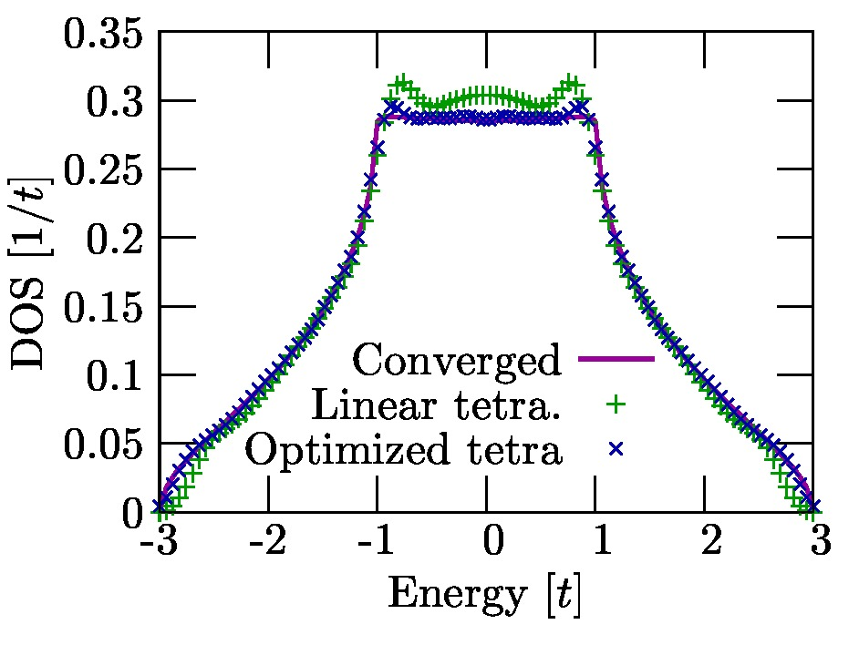
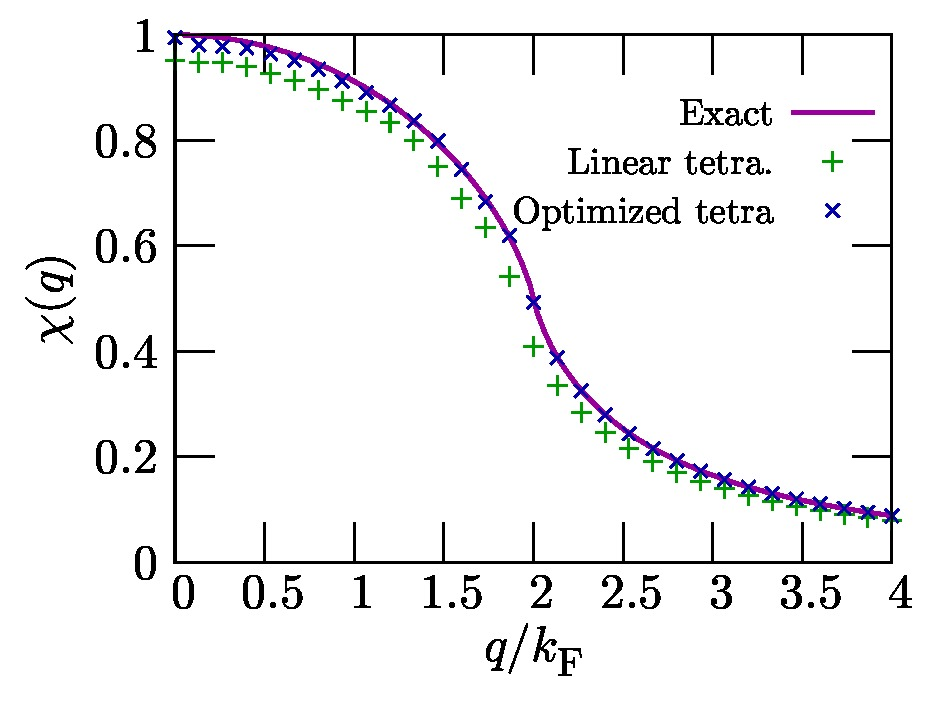

この文書ではテトラへドロン法ライブラリlibtetrabzについての解説を行っている.
libtetrabzは線形テトラへドロン法もしくは最適化線形テトラへドロン法[1]
を用いて全エネルギーや電荷密度, 部分状態密度, 分極関数等を計算するためのライブラリ群である.
このライブラリには, 軌道エネルギーをインプットとして,
$$ \begin{aligned} \sum_{n n' k} F(\varepsilon_{n k}, \varepsilon_{n' k+q})X_{n n' k} = \sum_{n n' k} w_{n n' k} X_{n n' k}\end{aligned} $$
のような積分における, 積分重み$w_{n n' k}$を出力するサブルーチンを, 各種計算について取り揃えている. 具体的には以下の計算に対応している.
$$ \begin{aligned} &\sum_{n k} \theta(\varepsilon_{\rm F} - \varepsilon_{n k}) X_{n k} \\ &\sum_{n k} \delta(\omega - \varepsilon_{n k}) X_{n k}(\omega) \\ &\sum_{n n' k} \delta(\varepsilon_{\rm F} - \varepsilon_{n k}) \delta(\varepsilon_{\rm F} - \varepsilon'_{n' k}) \\ &\sum_{n n' k} \theta(\varepsilon_{\rm F} - \varepsilon_{n k}) \theta(\varepsilon_{n k} - \varepsilon'_{n' k}) \\ &\sum_{n n' k} \frac{\theta(\varepsilon_{\rm F} - \varepsilon_{n k}) \theta(\varepsilon'_{n' k} - \varepsilon_{\rm F})} {\varepsilon'_{n' k} - \varepsilon_{n k}} X_{n n' k} \\ &\sum_{n n' k} \theta(\varepsilon_{\rm F} - \varepsilon_{n k}) \theta(\varepsilon'_{n' k} - \varepsilon_{\rm F}) \delta(\varepsilon'_{n' k} - \varepsilon_{n k} - \omega) X_{n n' k}(\omega) \\ &\sum_{n n' k} \frac{\theta(\varepsilon_{\rm F} - \varepsilon_{n k}) \theta(\varepsilon'_{n' k} - \varepsilon_{\rm F})} {\varepsilon'_{n' k} - \varepsilon_{n k} + i \omega} X_{n n' k}(\omega) \end{aligned} $$
Copyright (c) 2014 Mitsuaki Kawamura
以下に定める条件に従い, 本ソフトウェアおよび関連文書のファイル（以下「ソフトウェア」） の複製を取得するすべての人に対し, ソフトウェアを無制限に扱うことを無償で許可します. これには, ソフトウェアの複製を使用, 複写, 変更, 結合, 掲載, 頒布, サブライセンス, および/または販売する権利, およびソフトウェアを提供する相手に同じことを許可する権利も無制限に含まれます.
上記の著作権表示および本許諾表示を, ソフトウェアのすべての複製または重要な部分に記載するものとします.
ソフトウェアは「現状のまま」で, 明示であるか暗黙であるかを問わず, 何らの保証もなく提供されます. ここでいう保証とは, 商品性, 特定の目的への適合性, および権利非侵害についての保証も含みますが, それに限定されるものではありません. 作者または著作権者は, 契約行為, 不法行為, またはそれ以外であろうと, ソフトウェアに起因または関連し, あるいはソフトウェアの使用またはその他の扱いによって生じる一切の請求, 損害, その他の義務について何らの責任も負わないものとします.
doc/manual_en.html : マニュアル(英語)
doc/manual_jp.html : マニュアル(日本語)(今開いて見ているファイル)
examples/ : ライブラリ使用例
src/ : ソースファイルディレクトリ
Makefile, make.sys : Makeファイルおよびコンパイル環境設定ファイル
以下のものが必要となる.
fortran コンパイラ
MPI ライブラリ (MPI/ハイブリッド並列版を利用する場合)
以下の場所から.tar.gzファイルをダウンロードする.
http://osdn.jp/projects/libtetrabz/releases/
ダウンロードした.tar.gzファイルを展開し, 出来たディレクトリに入る.
$ tar xzvf libtetrabz_1.0.1.tar.gz
$ cd libtetrabz
自分の環境に合わせて make.sysの以下の変数を書き換える.
TOPDIR : 展開してできたディレクトリの絶対パス
F90 : シリアル用fortran コンパイルコマンド (gfortran, ifort, frt 等)
MPIF90 : MPI用fortran コンパイルコマンド (mpif90, mpiifort, mpifrt 等)
FFLAGS : fortranコンパイルオプション
次のコマンドを実行しコンパイルする.
$ make コンパイルが成功するとsrc/に以下のファイルが生成される.
src/libtetrabz.a
src/libtetrabz.mod
src/libtetrabz_mpi.a
src/libtetrabz_mpi.mod
※ シリアル版のみmakeしたい場合は次の様にする.
$ cd src
$ make libtetrabz.a
また, example/以下のライブラリ使用例のプログラムもコンパイルされる.
example/dos.x : 立法格子シングルバンドタイトバインディングモデルのDOSを
計算する. ソースコードはdos.f90
example/lindhard.x : リントハルト関数を
計算する. ソースコードはlindhard.f90
 図1: dos.xを使って計算した, 立法格子タイトバインディング模型の状態密度. 実線は十分多くの$k$点を利用した時の結果. “$+$”, “$\times$”はそれぞれ$8\times8\times8 k$グリッドでの 線形テトラへドロン法および最適化テトラへドロン法の結果.
 図2: lindhard.xを使って計算したLindhard関数. 実線は解析的な結果. “$+$”, “$\times$”はそれぞれ$8\times8\times8 k$グリッドでの 線形テトラへドロン法および最適化テトラへドロン法の結果.
例/ intel fortran の場合
$ ifort program.f90 -L {libtetrabzパス}/src/ -I {libtetrabzパス}/src -ltetrabz -fopenmp
$ mpiifort program.f90 -L {libtetrabzパス}/src/ -I {libtetrabzパス}/src -ltetrabz_mpi -fopenmp
例/ intel C の場合
$ icc -lifcore program.f90 -L {libtetrabzパス}/src/ -I {libtetrabzパス}/src -ltetrabz -fopenmp
$ mpiicc -lifcore program.f90 -L {libtetrabzパス}/src/ -I {libtetrabzパス}/src -ltetrabz_mpi -fopenmp
-L, -I オプションについては, 以下のように設定すればつける必要は無い.
.a ファイルを環境変数
LIBRALLY_PATHに含まれているディレクトリへコピーする.
.mod ファイルを環境変数
INCLUDEに含まれているディレクトリへコピーする.
以下のサブルーチンを任意のプログラム内で
use libtetrabz, only : libtetrabz_occ
:
call libtetrabz_occ(ltetra,bvec,nb,nge,eig,ngw,wght)
のように呼び出して使用できる. サブルーチン名はすべてlibtetrabz_からはじまる.
MPI版についてはlibtetrabz_mpi_からはじまる.
またMPI版ではlibtetrabz_mpiモジュールをつかう.
シリアル版と MPI 版の引数の違いはコミニュケータを指定する整数commだけで, 他は同じである.
C言語で書かれたプログラムから呼び出す場合には次のようにする.
#include "libtetrabz.h"
:
libtetrabz_mp_libtetrabz_occ_(<etra,bvec,&nb,nge,eig,ngw,wght)
libtetrabz_mp_を, うしろに_をつけたものが
Cでの関数名となる.
MPI版ではlibtetrabz_mpi.hをインクルードし, fortranサブルーチン名の前には
libtetrabz_mpi_mp_をつける.
変数はすべてポインタとして渡す.
配列はすべて1次元配列として定義し一番左の添字が内側のループとなるようにする.
$$\begin{aligned} \sum_{n k} \theta(\varepsilon_{\rm F} - \varepsilon_{n k}) X_{n k} \end{aligned}$$
subroutine libtetrabz_occ(ltetra,bvec,nb,nge,eig,ngw,wght)
integer,intent(in) :: ltetra, nge(3), ngw(3), nb
real(8),intent(in) :: bvec(3,3)
real(8),intent(in) :: eig(nb,nge(1),nge(2),nge(3))
real(8),intent(out) :: wght(nb,ngw(1),ngw(2),ngw(3))
end subroutine libtetrabz_occ
subroutine libtetrabz_mpi_occ(ltetra,comm,bvec,nb,nge,eig,ngw,wght)
integer,intent(in) :: ltetra, comm, nge(3), ngw(3), nb
real(8),intent(in) :: bvec(3,3)
real(8),intent(in) :: eig(nb,nge(1),nge(2),nge(3))
real(8),intent(out) :: wght(nb,ngw(1),ngw(2),ngw(3))
end subroutine libtetrabz_mpi_occ
ltetra : (入力, 整数)テトラへドロン法の種類を決める.
1$\cdots$線形テトラへドロン法, 2$\cdots$最適化線形テトラへドロン法
comm : (入力, 整数) MPI 版のみ. コミニュケータ.
bvec(3,3) : (入力, 実数配列)逆格子ベクトル. 単位は任意で良い.
逆格子の形によって四面体の切り方を決めるため,
それらの長さの比のみが必要であるため.
nb : (入力, 整数) バンド本数
nge(3) : (入力, 整数配列) 軌道エネルギーのメッシュ数.
eig(nb,nge(1),nge(2),nge(3)) : (入力, 実数配列) 軌道エネルギー.
Fermiエネルギーを基準とすること($\varepsilon_{\rm F} = 0$).
ngw(3) : (入力, 整数配列) 積分重みの$k$メッシュ.
ngeと違っていても構わない(付録参照).
wght(nb,ngw(1),ngw(2),ngw(3)) : (出力, 実数配列) 積分重み
$$\begin{aligned} &\sum_{n k} \theta(\varepsilon_{\rm F} - \varepsilon_{n k}) X_{n k} \end{aligned}$$
subroutine libtetrabz_fermieng(ltetra,bvec,nb,nge,eig,ngw,wght,ef,nelec)
integer,intent(in) :: ltetra, nge(3), ngw(3), nb
real(8),intent(in) :: bvec(3,3), nelec
real(8),intent(in) :: eig(nb,nge(1),nge(2),nge(3))
real(8),intent(out) :: ef
real(8),intent(out) :: wght(nb,ngw(1),ngw(2),ngw(3))
end subroutine libtetrabz_fermieng
subroutine libtetrabz_mpi_fermieng(ltetra,comm,bvec,nb,nge,eig,ngw,wght,ef,nelec)
integer,intent(in) :: ltetra, comm, nge(3), ngw(3), nb
real(8),intent(in) :: bvec(3,3), nelec
real(8),intent(in) :: eig(nb,nge(1),nge(2),nge(3))
real(8),intent(out) :: ef
real(8),intent(out) :: wght(nb,ngw(1),ngw(2),ngw(3))
end subroutine libtetrabz_mpi_fermieng
ltetra : (入力, 整数)テトラへドロン法の種類を決める.
1$\cdots$線形テトラへドロン法, 2$\cdots$最適化線形テトラへドロン法
comm : (入力, 整数) MPI 版のみ. コミニュケータ.
bvec(3,3) : (入力, 実数配列)逆格子ベクトル. 単位は任意で良い.
逆格子の形によって四面体の切り方を決めるため, それらの長さの比のみが必要であるため.
nb : (入力, 整数)バンド本数
nge(3) : (入力, 整数配列) 軌道エネルギーのメッシュ数.
eig(nb,nge(1),nge(2),nge(3)) : (入力, 実数配列) 軌道エネルギー.
ngw(3) : (入力, 整数配列) 積分重みの$k$メッシュ.
ngeと違っていても構わない(付録参照).
wght(nb,ngw(1),ngw(2),ngw(3)) : (出力, 実数配列) 積分重み
ef : (出力, 実数) Fermi エネルギー
nelec : スピンあたりの(荷)電子数
$$\begin{aligned} &\sum_{n k} \delta(\omega - \varepsilon_{n k}) X_{n k}(\omega) \end{aligned}$$
subroutine libtetrabz_dos(ltetra,bvec,nb,nge,eig,ngw,wght,ne,e0)
integer,intent(in) :: ltetra, nge(3), ngw(3), nb, ne
real(8),intent(in) :: bvec(3,3), e0(ne)
real(8),intent(in) :: eig(nb,nge(1),nge(2),nge(3))
real(8),intent(out) :: wght(ne,nb,ngw(1),ngw(2),ngw(3))
end subroutine libtetrabz_dos
subroutine libtetrabz_mpi_dos(ltetra,comm,bvec,nb,nge,eig,ngw,wght,ne,e0)
integer,intent(in) :: ltetra, comm, nge(3), ngw(3), nb, ne
real(8),intent(in) :: bvec(3,3), e0(ne)
real(8),intent(in) :: eig(nb,nge(1),nge(2),nge(3))
real(8),intent(out) :: wght(ne,nb,ngw(1),ngw(2),ngw(3))
end subroutine libtetrabz_mpi_dos
ltetra : (入力, 整数)テトラへドロン法の種類を決める.
1$\cdots$線形テトラへドロン法, 2$\cdots$最適化線形テトラへドロン法
comm : (入力, 整数) MPI 版のみ. コミニュケーター.
bvec(3,3) : (入力, 実数配列)逆格子ベクトル. 単位は任意で良い.
逆格子の形によって四面体の切り方を決めるため, それらの長さの比のみが必要であるため.
nb : (入力, 整数)バンド本数
nge(3) : (入力, 整数配列) 軌道エネルギーのメッシュ数.
eig(nb,nge(1),nge(2),nge(3)) : (入力, 実数配列) 軌道エネルギー.
ngw(3) : (入力, 整数配列) 積分重みの$k$メッシュ.
ngeと違っていても構わない(付録参照).
wght(ne,nb,ngw(1),ngw(2),ngw(3)) : (出力, 実数配列) 積分重み
ne : (入力, 整数)状態密度を計算するエネルギー点数
e0(ne) : (入力, 実数配列) 状態密度を計算するエネルギー
$$\begin{aligned} &\sum_{n n' k} \delta(\varepsilon_{\rm F} - \varepsilon_{n k}) \delta(\varepsilon_{\rm F} - \varepsilon'_{n' k}) \end{aligned}$$
subroutine libtetrabz_doubledelta(ltetra,bvec,nb,nge,eig1,eig2,ngw,wght)
integer,intent(in) :: ltetra, nge(3), ngw(3), nb
real(8),intent(in) :: bvec(3,3)
real(8),intent(in) :: eig1(nb,nge(1),nge(2),nge(3)), eig2(nb,nge(1),nge(2),nge(3))
real(8),intent(out) :: wght(nb,nb,ngw(1),ngw(2),ngw(3))
end subroutine libtetrabz_doubledelta
subroutine libtetrabz_mpi_doubledelta(ltetra,comm,bvec,nb,nge,eig1,eig2,ngw,wght)
integer,intent(in) :: ltetra, comm0, nge(3), ngw(3), nb
real(8),intent(in) :: bvec(3,3)
real(8),intent(in) :: eig1(nb,nge(1),nge(2),nge(3)), eig2(nb,nge(1),nge(2),nge(3))
real(8),intent(out) :: wght(nb,nb,ngw(1),ngw(2),ngw(3))
end subroutine libtetrabz_mpi_doubledelta
ltetra : (入力, 整数)テトラへドロン法の種類を決める.
1$\cdots$線形テトラへドロン法, 2$\cdots$最適化線形テトラへドロン法
comm : (入力, 整数) MPI 版のみ. コミニュケータ.
bvec(3,3) : (入力, 実数配列)逆格子ベクトル. 単位は任意で良い.
逆格子の形によって四面体の切り方を決めるため, それらの長さの比のみが必要であるため.
nb : (入力, 整数)バンド本数
nge(3) : (入力, 整数配列) 軌道エネルギーのメッシュ数.
eig1(nb,nge(1),nge(2),nge(3)) : (入力, 実数配列) 軌道エネルギー.
Fermi エネルギーを基準とすること($\varepsilon_{\rm F}=0$). eig2 も同様.
eig2(nb,nge(1),nge(2),nge(3)) : (入力, 実数配列) 軌道エネルギー.
移行運動量の分だけグリッドをずらしたものなど.
ngw(3) : (入力, 整数配列) 積分重みの$k$メッシュ.
ngeと違っていても構わない(付録参照).
wght(nb,nb,ngw(1),ngw(2),ngw(3)) : (出力, 実数配列) 積分重み
$$\begin{aligned} &\sum_{n n' k} \theta(\varepsilon_{\rm F} - \varepsilon_{n k}) \theta(\varepsilon_{n k} - \varepsilon'_{n' k}) \end{aligned}$$
subroutine libtetrabz_occstep(ltetra,bvec,nb,nge,eig1,eig2,ngw,wght)
integer,intent(in) :: ltetra, nge(3), ngw(3), nb
real(8),intent(in) :: bvec(3,3)
real(8),intent(in) :: eig1(nb,nge(1),nge(2),nge(3)), eig2(nb,nge(1),nge(2),nge(3))
real(8),intent(out) :: wght(nb,nb,ngw(1),ngw(2),ngw(3))
end subroutine libtetrabz_occstep
subroutine libtetrabz_mpi_occstep(ltetra,comm0,bvec,nb,nge,eig1,eig2,ngw,wght)
integer,intent(in) :: ltetra, comm0, nge(3), ngw(3), nb
real(8),intent(in) :: bvec(3,3)
real(8),intent(in) :: eig1(nb,nge(1),nge(2),nge(3)), eig2(nb,nge(1),nge(2),nge(3))
real(8),intent(out) :: wght(nb,nb,ngw(1),ngw(2),ngw(3))
end subroutine libtetrabz_mpi_occstep
ltetra : (入力, 整数)テトラへドロン法の種類を決める.
1$\cdots$線形テトラへドロン法, 2$\cdots$最適化線形テトラへドロン法
comm : (入力, 整数) MPI 版のみ. コミニュケータ.
bvec(3,3) : (入力, 実数配列)逆格子ベクトル. 単位は任意で良い.
逆格子の形によって四面体の切り方を決めるため, それらの長さの比のみが必要であるため.
nb : (入力, 整数)バンド本数
nge(3) : (入力, 整数配列) 軌道エネルギーのメッシュ数.
eig1(nb,nge(1),nge(2),nge(3)) : (入力, 実数配列) 軌道エネルギー.
Fermi エネルギーを基準とすること($\varepsilon_{\rm F}=0$). eig2 も同様.
eig2(nb,nge(1),nge(2),nge(3)) : (入力, 実数配列) 軌道エネルギー.
移行運動量の分だけグリッドをずらしたものなど.
ngw(3) : (入力, 整数配列) 積分重みの$k$メッシュ.
nge と違っていても構わない(付録参照).
wght(nb,nb,ngw(1),ngw(2),ngw(3)) : (出力, 実数配列) 積分重み
$$\begin{aligned} &\sum_{n n' k} \frac{\theta(\varepsilon_{\rm F} - \varepsilon_{n k}) \theta(\varepsilon'_{n' k} - \varepsilon_{\rm F})} {\varepsilon'_{n' k} - \varepsilon_{n k}} X_{n n' k} \end{aligned}$$
subroutine libtetrabz_polstat(ltetra,bvec,nb,nge,eig1,eig2,ngw,wght)
integer,intent(in) :: ltetra, nge(3), ngw(3), nb
real(8),intent(in) :: bvec(3,3)
real(8),intent(in) :: eig1(nb,nge(1),nge(2),nge(3)), eig2(nb,nge(1),nge(2),nge(3))
real(8),intent(out) :: wght(nb,nb,ngw(1),ngw(2),ngw(3))
end subroutine libtetrabz_polstat
subroutine libtetrabz_mpi_occstep(ltetra,comm0,bvec,nb,nge,eig1,eig2,ngw,wght)
integer,intent(in) :: ltetra, comm0, nge(3), ngw(3), nb
real(8),intent(in) :: bvec(3,3)
real(8),intent(in) :: eig1(nb,nge(1),nge(2),nge(3)), eig2(nb,nge(1),nge(2),nge(3))
real(8),intent(out) :: wght(nb,nb,ngw(1),ngw(2),ngw(3))
end subroutine libtetrabz_mpi_occstep
ltetra : (入力, 整数)テトラへドロン法の種類を決める.
1$\cdots$線形テトラへドロン法, 2$\cdots$最適化線形テトラへドロン法
comm : (入力, 整数) MPI 版のみ. コミニュケータ.
bvec(3,3) : (入力, 実数配列)逆格子ベクトル. 単位は任意で良い.
逆格子の形によって四面体の切り方を決めるため, それらの長さの比のみが必要であるため.
nb : (入力, 整数)バンド本数
nge(3) : (入力, 整数配列) 軌道エネルギーのメッシュ数.
eig1(nb,nge(1),nge(2),nge(3)) : (入力, 実数配列) 軌道エネルギー.
Fermi エネルギーを基準とすること($\varepsilon_{\rm F}=0$). eig2 も同様.
eig2(nb,nge(1),nge(2),nge(3)) : (入力, 実数配列) 軌道エネルギー.
移行運動量の分だけグリッドをずらしたものなど.
ngw(3) : (入力, 整数配列) 積分重みの$k$メッシュ.
ngeと違っていても構わない(付録参照).
wght(nb,nb,ngw(1),ngw(2),ngw(3)) : (出力, 実数配列) 積分重み
$$\begin{aligned} &\sum_{n n' k} \theta(\varepsilon_{\rm F} - \varepsilon_{n k}) \theta(\varepsilon'_{n' k} - \varepsilon_{\rm F}) \delta(\varepsilon'_{n' k} - \varepsilon_{n k} - \omega) X_{n n' k}(\omega) \end{aligned}$$
subroutine libtetrabz_fermigr(ltetra,bvec,nb,nge,eig1,eig2,ngw,wght,ne,e0)
integer,intent(in) :: ltetra, nge(3), ngw(3), nb, ne
real(8),intent(in) :: bvec(3,3), e0(ne)
real(8),intent(in) :: eig1(nb,nge(1),nge(2),nge(3)), eig2(nb,nge(1),nge(2),nge(3))
real(8),intent(out) :: wght(ne,nb,nb,ngw(1),ngw(2),ngw(3))
end subroutine libtetrabz_fermigr
subroutine libtetrabz_mpi_fermigr(ltetra,comm0,bvec,nb,nge,eig1,eig2,ngw,wght,ne,e0)
integer,intent(in) :: ltetra, comm0, nge(3), ngw(3), nb, ne
real(8),intent(in) :: bvec(3,3), e0(ne)
real(8),intent(in) :: eig1(nb,nge(1),nge(2),nge(3)), eig2(nb,nge(1),nge(2),nge(3))
real(8),intent(out) :: wght(ne,nb,nb,ngw(1),ngw(2),ngw(3))
end subroutine libtetrabz_mpi_fermigr
ltetra : (入力, 整数)テトラへドロン法の種類を決める.
1$\cdots$線形テトラへドロン法, 2$\cdots$最適化線形テトラへドロン法
comm : (入力, 整数) MPI 版のみ. コミニュケータ.
bvec(3,3) : (入力, 実数配列)逆格子ベクトル. 単位は任意で良い.
逆格子の形によって四面体の切り方を決めるため, それらの長さの比のみが必要であるため.
nb : (入力, 整数)バンド本数
nge(3) : (入力, 整数配列) 軌道エネルギーのメッシュ数.
eig1(nb,nge(1),nge(2),nge(3)) : (入力, 実数配列) 軌道エネルギー.
Fermi エネルギーを基準とすること($\varepsilon_{\rm F} = 0$). eig2も同様.
eig2(nb,nge(1),nge(2),nge(3)) : (入力, 実数配列) 軌道エネルギー.
移行運動量の分だけグリッドをずらしたものなど.
ngw(3) : (入力, 整数配列) 積分重みの$k$メッシュ.
nge と違っていても構わない(付録参照).
wght(ne,nb,nb,ngw(1),ngw(2),ngw(3)) : (出力, 実数配列) 積分重み
ne : (入力, 整数)フォノンモード数
e0(ne) : (入力, 実数配列) フォノン振動数
$$\begin{aligned} &\sum_{n n' k} \frac{\theta(\varepsilon_{\rm F} - \varepsilon_{n k}) \theta(\varepsilon'_{n' k} - \varepsilon_{\rm F})} {\varepsilon'_{n' k} - \varepsilon_{n k} + i \omega} X_{n n' k}(\omega) \end{aligned}$$
subroutine libtetrabz_polimg(ltetra,bvec,nb,nge,eig1,eig2,ngw,wght,ne,e0)
integer,intent(in) :: ltetra, nge(3), ngw(3), nb, ne
real(8),intent(in) :: bvec(3,3), e0(ne)
real(8),intent(in) :: eig1(nb,nge(1),nge(2),nge(3)), eig2(nb,nge(1),nge(2),nge(3))
real(8),intent(out) :: wght(2,ne,nb,nb,ngw(1),ngw(2),ngw(3))
end subroutine libtetrabz_polimg
subroutine libtetrabz_mpi_polimg(ltetra,comm0,bvec,nb,nge,eig1,eig2,ngw,wght,ne,e0)
integer,intent(in) :: ltetra, comm0, nge(3), ngw(3), nb, ne
real(8),intent(in) :: bvec(3,3), e0(ne)
real(8),intent(in) :: eig1(nb,nge(1),nge(2),nge(3)), eig2(nb,nge(1),nge(2),nge(3))
real(8),intent(out) :: wght(2,ne,nb,nb,ngw(1),ngw(2),ngw(3))
end subroutine libtetrabz_mpi_polimg
ltetra : (入力, 整数)テトラへドロン法の種類を決める.
1$\cdots$線形テトラへドロン法, 2$\cdots$最適化線形テトラへドロン法
comm : (入力, 整数) MPI 版のみ. コミニュケータ.
bvec(3,3) : (入力, 実数配列)逆格子ベクトル. 単位は任意で良い.
逆格子の形によって四面体の切り方を決めるため, それらの長さの比のみが必要であるため.
nb : (入力, 整数)バンド本数
nge(3) : (入力, 整数配列) 軌道エネルギーのメッシュ数.
eig1(nb,nge(1),nge(2),nge(3)) : (入力, 実数配列) 軌道エネルギー.
Fermi エネルギーを基準とすること($\varepsilon_{\rm F}=0$). eig2も同様.
eig2(nb,nge(1),nge(2),nge(3)) : (入力, 実数配列) 軌道エネルギー.
移行運動量の分だけグリッドをずらしたものなど.
ngw(3) : (入力, 整数配列) 積分重みの$k$メッシュ.
ngeと違っていても構わない(付録参照).
wght(2,ne,nb,nb,ngw(1),ngw(2),ngw(3)) : (出力, 実数配列) 積分重み .
1番目の次元は実部と虚部を格納する.
ne : (入力, 整数)計算を行う虚振動数の点数
e0(ne) : (入力, 実数配列) 計算を行う虚振動数
以下では電荷密度を計算するサブルーチンを示す。
$$\begin{aligned} \rho(r) = 2 \sum_{n k} \theta(\varepsilon_{\rm F} - \varepsilon_{n k}) |\varphi_{n k}(r)|^2 \end{aligned}$$
subroutin calc_rho(nr,nb,ng,nelec,bvec,eig,ef,phi,rho)
!
use libtetrabz, only : libtetrabz_fermieng
implicit none
!
integer,intent(in) :: nr ! number of r
integer,intent(in) :: nb ! number of bands
integer,intent(in) :: ng(3)
! k-point mesh
real(8),intent(in) :: nelec ! number of electrons per spin
real(8),intent(in) :: bvec(3,3) ! reciplocal lattice vector
real(8),intent(in) :: eig(nb,ng(1),ng(2),ng(3)) ! Kohn-Sham eigenvalues
real(8),intent(out) :: ef ! Fermi energy
complex(8),intent(in) :: phi(nr,nb,ng(1),ng(2),ng(3)) ! Kohn-Sham orbitals
real(8),intent(out) :: rho(nr) ! Charge density
!
integer :: ib, i1, i2, i3, ltetra
real(8) :: wght(nb,ng(1),ng(2),ng(3))
!
ltetra = 2
!
call libtetrabz_fermieng(ltetra,bvec,nb,ng,eig,ng,wght,ef,nelec)
!
rho(1:nr) = 0d0
do i1 = 1, ng(3)
do i2 = 1, ng(2)
do i1 = 1, ng(1)
do ib = 1, nb
rho(1:nr) = rho(1:nr) + 2d0 * wght(ib,i1,i2,i3) &
& * dble(conjg(phi(1:nr,ib,i1,i2,i3)) * phi(1:nr,ib,i1,i2,i3))
end do
end do
end do
end do
!
end subroutin calc_rho
プログラムのバグや質問は以下のフォーラムへご投稿ください.
http://sourceforge.jp/projects/libtetrabz/forums/
開発に参加したい方は以下の連絡先にて受け付けております.
東京大学物性研究所
河村光晶
mkawamura__at__issp.u-tokyo.ac.jp
積分
$$\begin{aligned} \langle X \rangle = \sum_{k} X_k w(\varepsilon_k) \end{aligned}$$
を計算するとする. このとき,
$w$は$\varepsilon_k$に敏感な関数(階段関数$\cdot$デルタ関数等)であり, なるべく細かいグリッド上の$\varepsilon_k$が必要である.
$X_k$を求めるための計算コストが$\varepsilon_k$の計算コストよりかなり大きい.
という場合には$X_k$のグリッドを補間により増やす方法が有効である. それは,
$\varepsilon_k$を細かい$k$グリッド上で計算する.
$X_k$を粗いグリッド上で計算し, それを補間(線形補間, 多項式補間, スプライン補間など)して細かいグリッド上での値を得る.
$$\begin{aligned} X_k^{\rm dense} = \sum_{k'}^{\rm coarse} F_{k k'} X_{k'}^{\rm coarse} \end{aligned}$$
細かい$k$グリッドで上記の積分を行う.
$$\begin{aligned} \langle X \rangle = \sum_{k}^{\rm dense} X_k^{\rm dense} w_k^{\rm dense} \end{aligned}$$
という流れで行われる.
さらに, この計算と同じ結果を得るように粗いグリッド上での積分重み$w_k^{\rm coarse}$を $w_k{\rm dense}$から求める(逆補間)ことも可能である. すなわち,
$$\begin{aligned} \sum_k^{\rm dense} X_k^{\rm dense} w_k^{\rm dense} = \sum_k^{\rm coarse} X_k^{\rm coarse} w_k^{\rm coarse} \end{aligned}$$
が満たされる事を要請すると
$$\begin{aligned} w_k^{\rm coarse} = \sum_k^{\rm dense} F_{k ' k} w_{k'}^{\rm dense} \end{aligned}$$
となる. この場合の計算手順は,
細かい$k$グリッド上の $\varepsilon_k$から$w_k^{\rm dense}$を計算する.
逆補間により$w_k^{\rm coarse}$を求める.
粗いグリッド上での$X_k$との積和を行う.
となる. このライブラリ内の全ルーチンはこの逆補間の機能を備えており, 軌道エネルギーの$k$グリッドと重み関数の$k$グリッドを 異なる値にすると逆補間された$w_k^{\rm coarse}$が出力される.
[1] M. Kawamura, Y. Gohda, S. Tsuneyuki, Phys. Rev. B 89 094515 (2014).